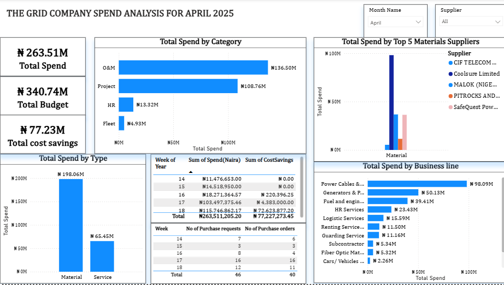

Data Analyst
Download My Full CVDetail-oriented Data Analyst with a strong foundation in data interpretation and visualization. I specialize in streamlining reporting processes, leveraging cloud infrastructure for hosting, and implementing workflow automation to drive organizational efficiency.
Tools: Power BI, Excel.
Result: Created automated dashboards that improved decision-making speed by 40%.
